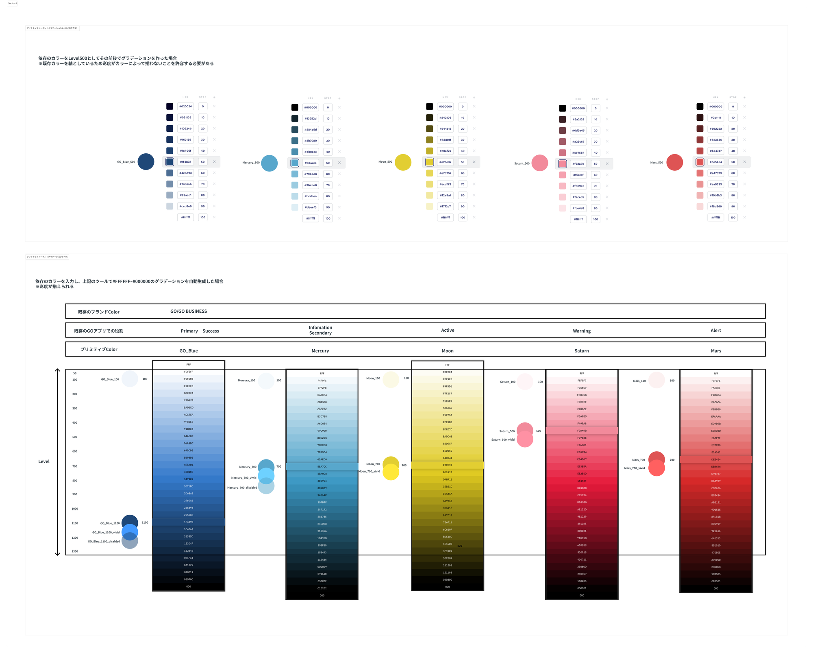
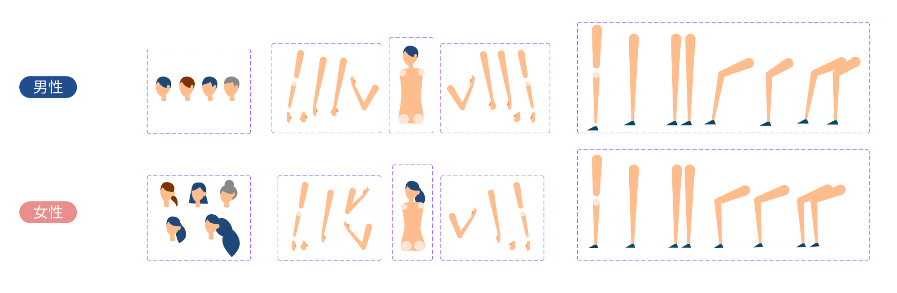
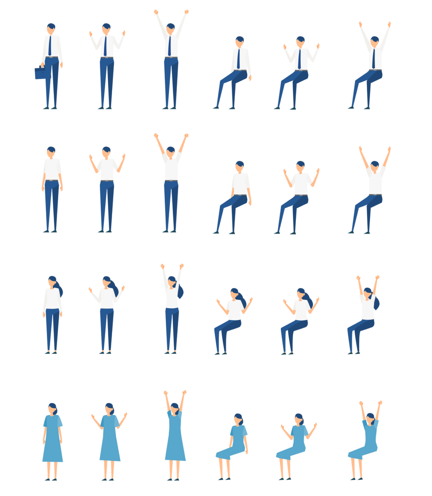

概要
所属するデザイン部でドキュメント化・ルール化されていない課題をタスク化し、施策の検討・ドキュメント化・データ化などの対応を実施。
- デザインシステム検討
- 人員が増えてく中で、WEBのデザインルールや実装経験に差がある状況で配色やフォントサイズが担当者によって差が出てしまう状況が起きていた。その状況を解決するため、デザインシステムの検討。フォントサイズ・配色を決めを実施。全てFigmaで管理し、ライブラリとして展開。
- 【記事】GOのデザインシステムをつくった背景

- 
- イラストのデザインシステム化
- 仕上がりに個人差が出てしまうイラストを人物のパーツ単位でコンポーネント化し、組み合わせることでトンマなのぶれをなくすために作成。全てFigmaで管理し、ライブラリとして展開。
- 
- 